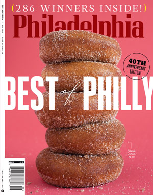
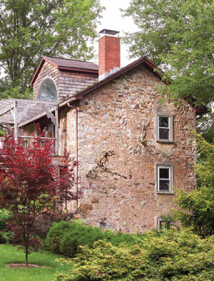
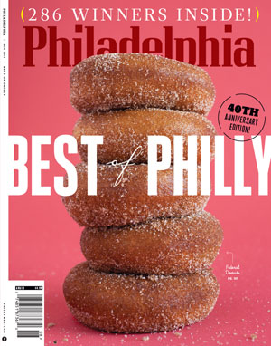
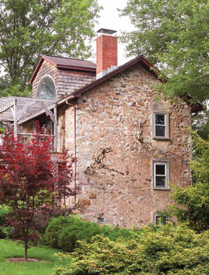
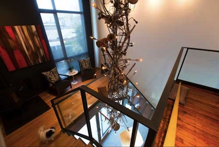
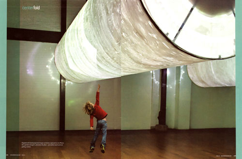
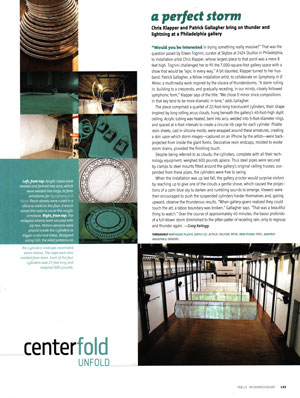

Eileen Tognini's Country Home Featured in Philadelphia Magazine

Read the full article:"Curator Eileen Tognini’s upstate hideaway takes fantastical art out of the gallery and into the greenery."



(See Slides 31-36)

"It took art curator Eileen Tognini, 52, about 25 years—and her daughter moving out to go to college—before she and her husband Tony finally turned the interior of their three-story, 2,500-square-foot Victorian 1882 brownstone in what's called the Fishtown neighborhood of Philadelphia into the contemporary design they'd long wanted."
Exhibition: Friday April 5th, 6-9pm; Saturday April 6th, noon-9pm
The Skybox at 2424 Studios, 2424 East York Street, Philadelphia PA 19125
PHILADELPHIA - Contemporary sculptor Jason Hackenwerth will exhibit large-scale new work on Thursday April 4 – 6th in the Skybox at 2424 Studios at 2424 East York Street in the Fishtown neighborhood.
Using ultra lightweight plastic, Jason will create billowing illuminated cloud caves filled with air; referencing expansion and contraction, ebb and flow, and our own “exhale and inhale”. Light and movement will create atmospheric spaces for viewers to wander, evoking a sense of timelessness and meditative calm.
Collected in Designboom's art roundup - Interactive Thunderstorms by Patrick Gallagher + Chris Klapper
Featured as one of 10 Very-Cool Art Installations That Imitate Weather in The Atlantic Monthly
Lauded in Fast Company's Co.Design blog, where you can Feel What It’s Like To Conduct The Music Of A Thunderstorm
Interior Design magazine February 2013 Centerfold feature
Photo by Ken Schuler
(click images to read)
 
Exhibition: October 20 - December 2 2012
The Skybox at 2424 Studios, 2424 East York Street, Philadelphia PA 19125
Gallery Hours: Tuesday - Saturday 3-8pm
New York artists Chris Klapper and Patrick Gallagher create an interactive sound and video installation on an epic scale, accompanied by Philadelphia-based Kun-Yang Lin for three solo performances.
A new work by Chris Klapper and Patrick Gallagher will be opening Saturday October 20 at the Skybox 2424 Studios. A thunderstorm contained within a series of large hand cast resin sculptures, each individual form is a unique instrument hanging 40 feet from the ceiling. Restored in 2009 with a nod to its industrial roots, the Skybox is a 7000 square foot architectural gem with a 3-story high skylight.
Suspended just within reach and activated by touch, the viewer sets the symphony in motion by gently pushing the sculptural forms which trigger the various sound elements of the storm. Sensors relay individual recordings of thunder, lightning, wind, and rain with alternating intensities to a full-scale symphony of sounds.
Acting as both conductor and musician, the viewer creates an evolving composition of atmospheric sounds, forging an environment that envelops the audience.
February 17, 2012
by Caroline Tiger, For The Philadelphia Inquirer
Independent curator Eileen Tognini conjures up the site-specific works at Fishtown's massive Skybox Gallery. So far, she and her artists have filled the turn-of-the-century industrial space with installations made of hand-charred tree limbs, recycled water bottles, and gigantic balloon sculptures. "The shows have been about taking a simple material and reimagining it," she says.
Tognini also chairs Collab, the committee that drives the Philadelphia Museum of Art's modern-design initiatives. Her studio overlooking the SkyBox reflects her life in design and art. Many of the pieces - a table made from reclaimed pallets by University of the Arts grad Anthony Angelicola; two chandeliers by Old City designer Michael Biello - are design-art, or functional objects that are handcrafted rather than mass-produced.
The space is also punctuated by curious groupings of objects, or what Tognini calls "curated corners." In one such corner, two cast-iron pulleys are placed in a well-considered triangle with a pair of antique Chinese slippers and two elaborately bound design books. Day to day, Tognini exercises her curatorial eye by teasing out connections between these seemingly unlike things.
Consumed with: Collections of objects. "I'm smitten by relationships," she says. "It's about the juxtapositions." Specifically, she's inspired right now by the dialogue between the following: a pair of cast-iron tailor's scissors, a ceramic hand form, an antique letter bought at an Aix-en-Provence flea market, a charred root from the most recent Skybox installation, and a single porcelain walnut in a bowl full of real nuts.
Common thread: "They're all sculptural, beautiful objects," she says. "Together, they're where trade, craft, art, and the natural world intersect." She bought the heavy, cast-iron scissors from a Jamaican man at a Poconos flea market. They were custom-made for his mother, a tailor. The walnut is from an Art Star craft bazaar. "I'm not a collector of any one thing," she says, "but I've picked these pieces up along the way, and they inspire me."
Raw materials: Through a curtain of silver beads at one end of the studio is Tognini's inspiration board. It currently holds a piece of scrap-yard-sourced steel twisted into a scribble; an art-deco-style label from a tin of absinthe pastilles; a square of cardboard dotted with brass tacks; and an unopened package of novelty erasers. "It's just a lot of little relationships that are often the genesis of other things," she says. These little relationships inform her design choices in the gallery.
Barnes raising: Pursuing a three-year horticulture course at the Barnes Foundation almost a decade ago, Tognini saw a direct relationship between Laura Barnes' outdoor plantings and the art her husband hung inside the galleries. "The colors you saw from inside the gallery were complementary to the artwork," says Tognini. "Even the bark and textures were taken into account." The program made her aware of what she does intuitively. "It made me more conscientious about how I could help others see things differently."

Exhibition: October 15, 2011 – November 19, 2011
The Skybox at 2424 Studios, 2424 East York Street, Philadelphia PA 19125
Gallery Hours: Tuesday - Saturday, Noon - 6pm
Open for the Philadelphia Open Studio Tours on October 15th and 16th from Noon to 6pm
In conjunction with Eileen Tognini, The Center for Emerging Visual Artists presents a solo exhibition and larger-than-life installation by CDP Fellow Alison Stigora, where the charred remains of salvaged timbers are juxtaposed with a turn-of-the century industrial space to create a powerful story of survival and rebirth.
The charred remains of salvaged timbers are re-imagined into a large site-specific installation by Alison Stigora in the soaring space of The Skybox at 2424 Studios. Stigora presents an original installation utilizing 10,000 hand-charred tree limbs, which were gathered from fallen wood from two nature preserves and two private estates and burned over 184 hours. Sprawling across the floor and climbing up two stories, the burnt wood undulates and inspires both physically and metaphorically. Juxtaposed with the turn-of-the century industrial space of the Skybox, Crossing Jordan communicates a powerful story of survival and rebirth.
For Stigora, burnt wood is a powerful medium that resonates with people in a primal way - fire creates a deep blackness that cannot be achieved otherwise. In the burning process, wood cracks and scales from the heat, creating a maze of scars on the wood's surface. The process of destroying and recreating is what allows a sculpture or drawing to develop. Stigora salvages charred remains from the aftermath of a fire and allows those same ash-covered remnants to communicate their story of survival as they are reborn into new sculptural works and installations.
New work by Aurora Robson
Curated by Eileen Tognini
Opening Party: Friday, October 15, 2010, 710pm
Exhibition: October 16 - November 7
Gallery Hours: Tuesday - Saturday, 1:26pm
Address: Skybox at 2424 East York Street, Philadelphia PA 11215
be like water will be presented as a DesignPhiladelphia event opening on Friday, October 15 at the Skybox at 2424 Studios, a new studio building at 2424 East York Street in Fishtown. Inspired by the dramatic turn-of-the-century industrial space, Curator Eileen Tognini invited Robson to create a monumental scale installation made from thousands of recycled plastic bottles and over 108' long.
"My work is largely about transforming something negative into something positive, recognizing and exploring potential. be like water is an installation comprised of bottles and caps that would otherwise be burdensome on the environment. Instead, I have transformed them to create what I hope is suggestive of an uplifting waterfall of light and form," says Aurora Robson.
In conjunction with the show, invited schools, including Philadelphia public, charter, private and a community school have been engaged in collecting plastic bottle caps. Plastic bottle caps are especially problematic as they do not get recycled, and end up in landfills and oceans likely to be ingested by birds and fish due to their opacity and bright colors. In a joint effort to raise environmental awareness, bottle caps will be collected and sorted by students, and then displayed at the event. Robson will then deliver all of the bottle caps to Aveda, located in Babylon, NY, one of the only places in the country that recycles caps.
The use of familiar, ordinary and recycled materials, considered unconventional by classical standards of materials to create art, has long been a personal interest of Eileen's. "It's my goal to introduce an artist's work whose use of unexpected materials may expand the definition of 'what is design of art,' moreover to use design and art to show how waste by-products can be brilliantly re-imagined so materials don't end up in the waste stream."
Robson is a 2009 recipient of the Pollock Krasner Grant and the New York Foundation for the Arts Fellowship in Sculpture, and a 2010 recipient of an Arthur Levine Foundation Grant. She has exhibited internationally and has works in major public, corporate and private collections worldwide. Robson is in the process of forming an international alliance of like-minded artists, designers and architects called Project Vortex, creating global opportunity for artists to join forces with Project Kaisei and the Ocean Conservancy to help eliminate the plastic vortexes in our oceans.
Eileen Tognini has been organizing and curating art-centered events, gallery shows, artist salons, and sculpture gardens for the last 14 years. Her work focuses on exhibiting talents of emerging and recognized artists in the Philadelphia/New York region.
For more info, download the full press release.


Labels: 2424studios, events
Labels: 2424studios, events, press

Labels: events, invitations

A new cultural center which is being developed in an old factory in Fishtown. It has artist studios and community space built around a giant gallery/performance space at its heart. The inaugural exhibition starting at the end of October features the work of cutting edge New York sculptor Jason Heckenwerth, whose medium is balloons!
Labels: 2424studios, press

{kind=link}
{kind=link}
{kind=link}